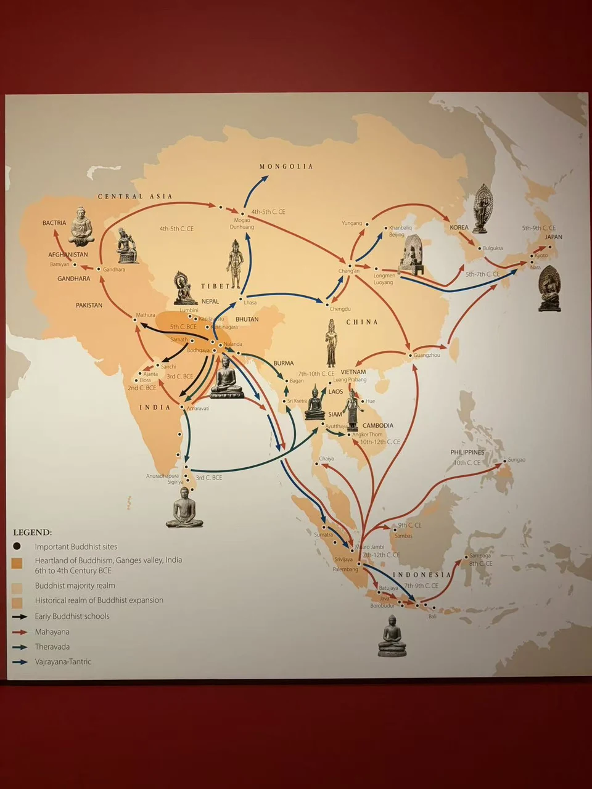
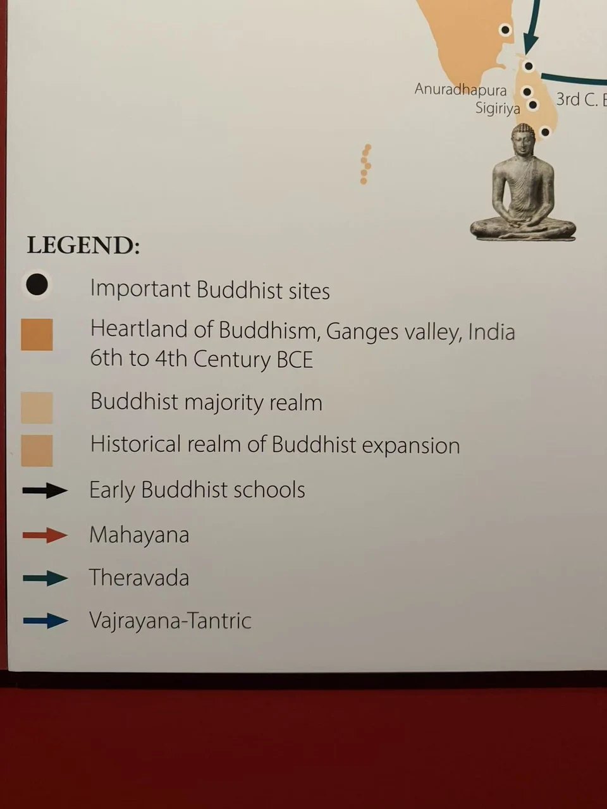
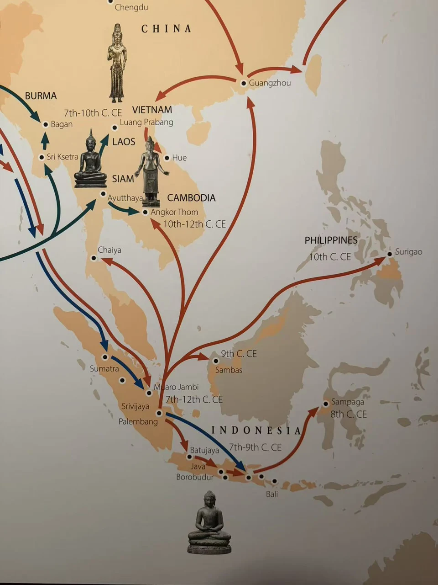

MOUNTAINS / SEAS / ENCOUNTERS
山海之间：佛教传播与造像的相遇
佛教传播伴随僧侣、商旅、经书、图像与工匠的流动。不同地方接受并改变这些传统，形成彼此联系又各具面貌的造像。从展厅地图回到一尊佛的衣纹、一双手的姿势，也能看见交流如何落实为具体形象。这里汇合了不同时期的线索，并非同时发生，更不是这些藏品已经确认的迁移记录。

休斯顿美术馆展厅佛教传播示意图，Merton摄 · 点击放大怎样读这幅图
这幅展厅地图汇集不同历史时期的传播线索，是概括示意，不是某一时代的疆域或精确交通图。邻近地点的年代，也不一定是该城或寺院的建造年代。
图例中的早期佛教诸部派、大乘、上座部与金刚乘并非彼此互斥的类别，也没有各自唯一、固定的道路。公元前第三世纪的早期传播，不能直接等同于后来成熟的上座部佛教格局。
现代国界不等于古代文化区域，底色也不能用来读取某时某地的佛教人口比例。下列地点介绍结合独立资料撰写；“补充地点”用来帮助理解本收藏，并非原图明确标出的标签。
[13] [14] 
展厅地图局部：图例与斯里兰卡，Merton摄 · 点击放大陆路与绿洲
从印度西北和犍陀罗到中亚，再到中国，僧侣与商旅利用的是彼此交织的河谷、山口和绿洲通道。经书需要翻译，图像也在新的寺院和石窟中获得不同面貌。敦煌既是交通节点，也是保存经卷与造像的场所；长安、洛阳则连接城市生活、翻译活动与佛教营建。今天并看犍陀罗雕刻与中国造像，可以从衣纹和叙事方式辨认各自的选择。 [1] [4]
沿途的地点与名字
- 蓝毗尼、菩提伽耶、鹿野苑（Lumbini / Bodhgaya / Sarnath）
- 三处圣地分别联系佛陀的诞生、成道与初次说法。蓝毗尼的阿育王石柱留下古代朝圣的记录，菩提伽耶围绕成道地形成寺院建筑，鹿野苑则让说法的故事有了可礼拜的地点。 [7] [8] [9]
- 那烂陀（Nalanda）
- 七世纪，玄奘和义净先后来到今印度比哈尔邦的那烂陀求学。经论研习、梵语学习与僧团生活在此相连；他们的记录也帮助后世认识这座寺院教育中心的建筑、戒律和日常生活。 [2] [30]
- 犍陀罗与马图拉（Gandhara / Mathura）
- 贵霜时期，犍陀罗与马图拉都是佛教造像的重要中心。前者位于印度西北的历史区域，后者是今印度北部城市；两地在面容、袈裟与身体塑造上的不同选择，让佛的形象呈现多种面貌。 [17] [37]
- 巴米扬（Bamiyan）
- 今阿富汗的巴米扬山谷曾有大型立佛、石窟与僧院，佛教艺术在这里吸收不同地区的形式。2001年，两尊大佛被塔利班摧毁；残存佛龛与周围洞窟仍保存着原来宗教空间的轮廓。 [5]
- 敦煌与莫高窟（Dunhuang / Mogao）
- 敦煌的绿洲交通连接商旅与求法者，莫高窟的营造则从四世纪延续了约千年。壁画、塑像与藏经洞文书，让僧侣、供养人及日常生活留下了不同于王朝纪年的记录。 [4]
- 长安、洛阳与龙门（Chang’an / Luoyang / Longmen）
- 645年玄奘携经像回到长安，随后在弘福寺、大慈恩寺等处译经。洛阳南面的龙门石窟则在北魏晚期至唐代持续营造：城市中的译场与山崖上的佛龛，呈现佛教知识和造像活动的两种空间。 [29] [21]
回到收藏

禅定佛坐像
犍陀罗，今阿富汗或巴基斯坦 · 约4—5世纪
本收藏中来自犍陀罗的作品

悉达多太子出家浮雕
犍陀罗，今巴基斯坦或阿富汗 · 约2—3世纪
本收藏中来自犍陀罗的叙事浮雕

佛三尊像
中国 · 北魏，526年
可联系造像发愿与汉字铭文观看
喜马拉雅山地之间
山地并未隔断往来。印度、克什米尔、尼泊尔与西藏之间，求法、译经与工艺交流在不同时期展开。藏传佛教的前弘主要联系七至九世纪，后弘则自十世纪后期继续发展；这并非一条路线的两次重演。克什米尔与尼泊尔工匠的传统参与了西藏造像的形成。并看斯瓦特、尼泊尔与西藏作品，衣饰、镶嵌和莲座的差异与相近之处都值得细读。 [13] [16]
沿途的地点与名字
- 斯瓦特与大克什米尔（Swat / Greater Kashmir） · 补充地点
- 斯瓦特河谷与克什米尔周边在中世纪发展出重要的金属造像传统。小型佛像、菩萨像与经书通过寺院网络流动，克什米尔工匠也接受跨地区委托；精细衣饰与镶嵌可放在这一背景中观看。 [16]
- 加德满都谷地（Kathmandu Valley） · 补充地点
- 谷地城市长期供养佛教与印度教艺术，纽瓦尔工匠以金属造像等技艺参与跨地域营造。十三世纪来自帕坦的阿尼哥进入元廷，主持白塔工程，是这类工艺往来的一个具体例子。 [16] [39]
- 拉萨与大昭寺（Lhasa / Jokhang）
- 大昭寺始建于七世纪，联系吐蕃时期佛教的发展。寺内受崇敬的释迦牟尼像，使这里成为长期的朝圣目的地；今日建筑经过历代增修，不能将所见殿堂都视作最初创建时的原貌。 [12] [31]
回到收藏

持莲观音
斯瓦特河谷，今巴基斯坦 · 约7世纪
本收藏中来自斯瓦特的作品

宝座上的佛陀
大克什米尔，今印度或巴基斯坦 · 约8—9世纪
本收藏中归于大克什米尔的作品

持莲观音
尼泊尔 · 约10世纪
本收藏中来自尼泊尔的作品

五方佛之一，可能为阿閦佛
西藏 · 约12世纪
本收藏中来自西藏的作品
跨海进入东亚
中国、朝鲜半岛与日本之间，经典、僧侣和图像随使节、求法与海上往来流动。半岛僧侣赴中国乃至印度学习，百济也参与了日本早期佛教的传入；各地接受佛教的时间并不相同。造像形式在不同的供养环境中被选择、调整和重新制作。这里的小型金铜像，可以从身体比例与背光并看，再从两地的诞生佛接近共同的浴佛实践。 [15]
沿途的地点与名字
- 朝鲜半岛（Korea）
- 六世纪，百济使节参与了佛教向日本的传入；半岛僧侣也赴中国乃至印度求法。此后统一新罗造像发展出圆阔面容与充实体量，说明经像的往来始终伴随本地工匠的选择和转化。 [15]
- 奈良（Nara）
- 奈良于710年建都，佛教此前已传入日本。八世纪圣武天皇推动国分寺体系和东大寺大佛营造，752年举行大佛开眼仪式；国家祈愿、僧侣教育与艺术制作在这些寺院中汇合。 [10] [32] [15]
回到收藏

佛立像
朝鲜半岛 · 统一新罗，8世纪
本收藏中来自朝鲜半岛的作品

诞生佛
朝鲜半岛 · 三国时期，7世纪
可联系诞生佛与浴佛题材观看

诞生佛与浴佛盆
日本 · 年代有疑点：展签并列奈良时期与7世纪
可与朝鲜半岛诞生佛比较的日本作品
季风与海路
季风帮助船只往返印度、斯里兰卡、东南亚岛屿与中国南方港口，僧侣也借商船旅行。七世纪，义净往返印度途中在室利佛逝停留，学习梵文与经书，海岛因而也是知识交流的中心。海上往来跨越不同佛教传统，方向并不单一。斯里兰卡、泰国与爪哇的造像，可以放在这一广阔背景中比较；这些网络提供了理解造像的历史背景；某件作品是否曾沿其中的路线流动，还需要另外的证据。 [14]
沿途的地点与名字
- 阿努拉德普勒（Anuradhapura）
- 这座斯里兰卡古都长期也是佛教中心。当地菩提树被奉为印度成道树的分枝，传统将其带入联系到公元前三世纪的僧伽蜜多；佛塔与大型寺院围绕礼拜、僧团生活和王室供养发展。 [3]
- 室利佛逝与巨港（Srivijaya / Palembang）
- 七世纪义净往返印度时在室利佛逝停留，学习梵语与经书。苏门答腊因而不只是航程中的中转地，也是求法的课堂。巨港常与这一历史政权相联系；义净的具体驻留寺院尚难落实到某处遗址。 [14] [51]
- 爪哇与婆罗浮屠（Java / Borobudur）
- 八至九世纪，爪哇岛中部建起婆罗浮屠。方形回廊上的叙事浮雕、上层圆台的镂空佛塔与佛像，把绕行和逐层上升组织成礼拜空间；岛上的小型金属像，则提供了另一种观看距离。 [6]
回到收藏

禅定佛坐像
斯里兰卡 · 阿努拉德普勒时期，8世纪
本收藏中来自斯里兰卡的作品

触地印佛坐像
泰国 · 14世纪
本收藏中来自泰国的作品

阿弥陀佛坐像
爪哇，印度尼西亚 · 9世纪
本收藏中来自爪哇的作品

金刚手菩萨
爪哇，印度尼西亚 · 约9—10世纪
可与爪哇佛像并看的金属造像
展厅地图的海域局部

展厅地图局部：东南亚岛屿与海域，Merton摄 · 点击放大地图上的其他名字
展厅地图还标出了许多圣地、都城、寺院和造像发现地点。有些因佛陀的生命故事受到礼拜，有些因王室营造或出土文物进入艺术史。展开一个地区，可以看看这些名字各自留下了什么。
印度与西北地区
- 迦毗罗卫（Kapilavastu）
- 释迦族故城，是太子成长与出家故事的重要背景。今尼泊尔提罗拉科特等遗址被提出与它对应，具体定位仍有讨论；古城之名也承载了后来朝圣者的记忆。 [33]
- 拘尸那迦（Kushinagara）
- 佛教传统中的涅槃圣地，今在印度北方邦。卧佛、涅槃寺与相关佛塔把佛陀最后的生命故事留在当地，也是法显、玄奘等求法者记述的地点。 [34]
- 桑奇（Sanchi）
- 中印度的佛塔群，营造可追溯至阿育王时期，后世不断扩建。塔门浮雕讲述佛传与宗教故事，栏楯和环绕通道则让观看与绕塔礼拜相连。 [18]
- 阿旃陀（Ajanta）
- 西印度的佛教石窟群，早期洞窟始于公元前，五至六世纪又有密集营造。礼拜堂与僧房相邻，壁画中的本生故事将佛陀前生的叙事带入僧院空间。 [35]
- 埃洛拉（Ellora）
- 玄武岩山崖上分布佛教、印度教和耆那教洞窟，主要在公元600—1000年陆续营造。不同信仰的礼拜空间并列保存，并非同一时代的一次统一工程。 [19]
- 阿马拉瓦蒂（Amaravati）
- 印度东南部的重要佛塔与雕刻中心。大塔在不同阶段增建，塔门与塔身石刻讲述佛传与供养故事；今天散藏的雕刻原来属于这样的建筑环境。 [36]
- 巴克特里亚（Bactria）
- 以今阿富汗北部及邻近地区为核心的历史区域。贵霜兴起与这里的大月氏活动有关，商贸把中亚、伊朗和印度的文化联系起来；它不是单一城市的名字。 [37]
中国与东亚
- 云冈（Yungang）
- 山西大同附近的石窟群，五至六世纪在北魏皇室支持下营造。昙曜五窟的大像将南亚、中亚的造像形式与本地营造相结合，也让王朝的佛教支持变得可见。 [20]
- 成都（Chengdu）
- 万佛寺相关地点自十九世纪末陆续出土佛教石雕，其中不少可据铭文断为南朝梁代。这批像让四川在南朝佛教艺术中的地位，有了具体可见的作品。 [38]
- 汗八里／北京（Khanbaliq / Beijing）
- 元大都是跨地域宫廷艺术的中心。1271年忽必烈命来自尼泊尔的阿尼哥主持白塔工程；今日妙应寺白塔仍让藏传佛教营造与纽瓦尔工艺的联系清晰可见。 [39]
- 佛国寺（Bulguksa）
- 庆州的统一新罗寺院，主要营造联系八世纪，与附近石窟庵共同构成重要宗教建筑群。石阶、台基和佛塔组织礼拜空间；地图写的是寺名，而不是另一座城市。 [22]
- 京都（Kyoto）
- 794年建都后，京都长期汇集宫廷、寺院与艺术制作。佛教此前早已传入日本；这里的重要性在于延续千年的寺院网络、木构建筑及园林传统。 [23] [15]
斯里兰卡与东南亚大陆
- 锡吉里耶／狮子岩（Sigiriya）
- 五世纪末，迦叶波一世在岩顶营建王宫，壁画与园林共同构成遗址的面貌。这里也保存佛教僧人的岩窟居住痕迹，王宫故事之外还有更早的宗教生活。 [24] [40]
- 室利差呾罗（Sri Ksetra）
- 伊洛瓦底江流域的骠人古城之一。砖砌佛塔与城墙、灌溉遗迹并存，让缅甸早期佛教显出城市与农业社会的背景，而不只是一组孤立造像。 [25]
- 蒲甘（Bagan）
- 十一至十三世纪的王都与塔寺营造中心。供养者通过建塔、修寺与绘画积累功德；密集遗址中的壁画和造像，至今仍显示这种持续投入的规模。 [26]
- 琅勃拉邦（Luang Prabang）
- 十四至十六世纪曾是澜沧王国的都城，也是区域佛教中心。城名联系受崇敬的勃拉邦佛像；王室、寺院和城市身份由此紧密相连。 [27]
- 阿瑜陀耶／大城（Ayutthaya）
- 约1350年建立的暹罗王都，河道联系海外商贸。大型寺院、佛塔与王宫共同组织城市，工艺也吸收往来各地的形式；它的重要营造比蒲甘晚得多。 [28]
- 猜耶（Chaiya）
- 泰国南部的佛教遗迹中心，以佛塔与观音青铜像著名。现藏曼谷国家博物馆的观音像可见精细冠饰和肩上的兽皮，相关形式联系半岛与爪哇的造像传统。 [41]
- 吴哥通／大吴哥（Angkor Thom）
- 阇耶跋摩七世在十二世纪末营建的王都，中心是巴戎寺，其佛教营造与大乘信仰相关。城内高塔与尊像的组合，应与较早以毗湿奴崇拜为背景的吴哥窟区分。 [43] [42]
- 顺化（Hue）
- 越南中部较晚的政治与佛教中心。香江畔的天姥寺始建于1601年，后经多次修建，钟、碑与佛殿留下不同阶段的供养记录，反映当地长期延续的寺院生活。 [44]
东南亚岛屿
- 穆阿罗占碑（Muaro Jambi）
- 苏门答腊巴当哈里河附近的大型寺院遗址群，砖构寺院与水池、人工运河相连。河流参与交通与日常生活；这里与巨港是不同地点，义净的记述不能直接定位到此。 [45]
- 巴图贾亚（Batujaya）
- 西爪哇北岸附近的佛教遗址。考古发现砖砌佛塔及更早聚落层；研究将主要佛教建筑置于七至十一世纪，更早地层也发现佛教痕迹，显示多阶段的发展。 [46]
- 巴厘岛（Bali）
- 除今天熟知的印度教传统，岛上也保存佛教遗存。北部Kalibukbuk出土小型泥塔、泥印与砖构建筑，考古研究将相关遗址联系到八至十四世纪的礼拜活动。 [47]
- 桑巴斯（Sambas）
- 婆罗洲西部一处佛教造像窖藏的发现地，金、银等材质的佛与菩萨像后来进入大英博物馆。窖藏保存了同处埋藏的组合，但并不因此证明诸像都在当地制作。 [42]
- 桑帕加（Sampaga / Sempaga）
- 苏拉威西卡拉马河口附近以一尊青铜佛像的发现闻名，衣褶常与阿马拉瓦蒂传统比较。研究对它的断代和来源仍有讨论，尚未形成一致的结论。 [48] [49]
- 苏里高（Surigao）
- 菲律宾棉兰老岛的重要古代金器发现地区。金饰与伴出的中国陶瓷，让海上交流有了实物线索；这些发现尚不足以将当地描述为大型佛教中心。 [50]